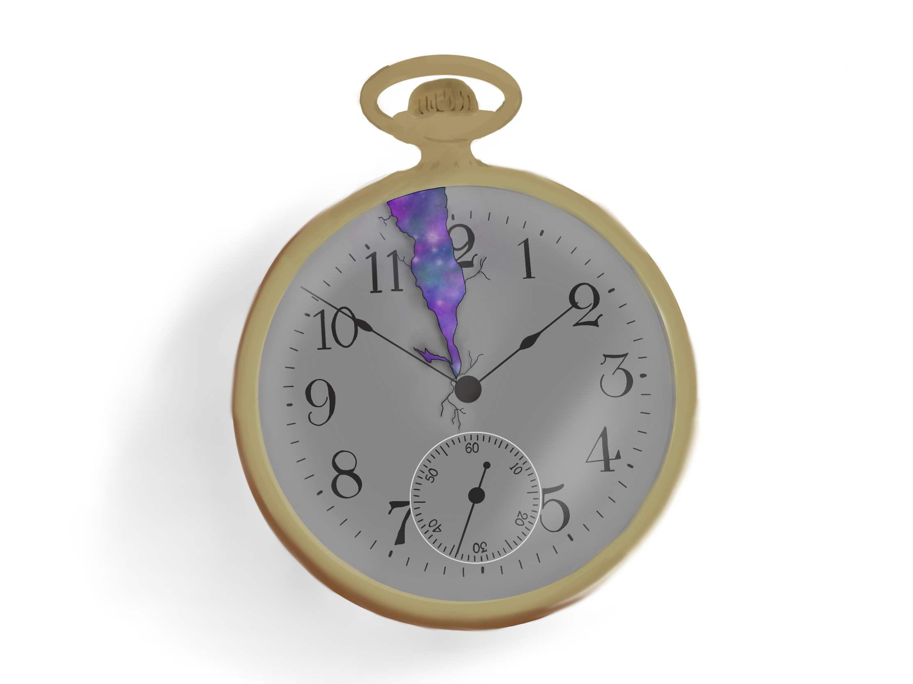
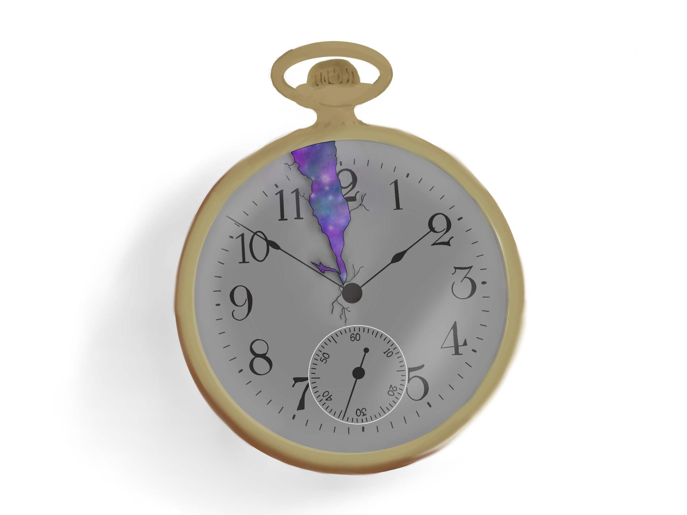
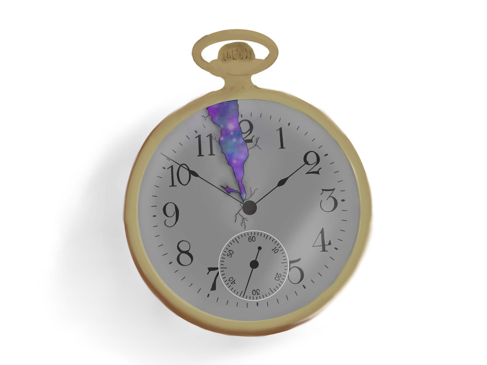
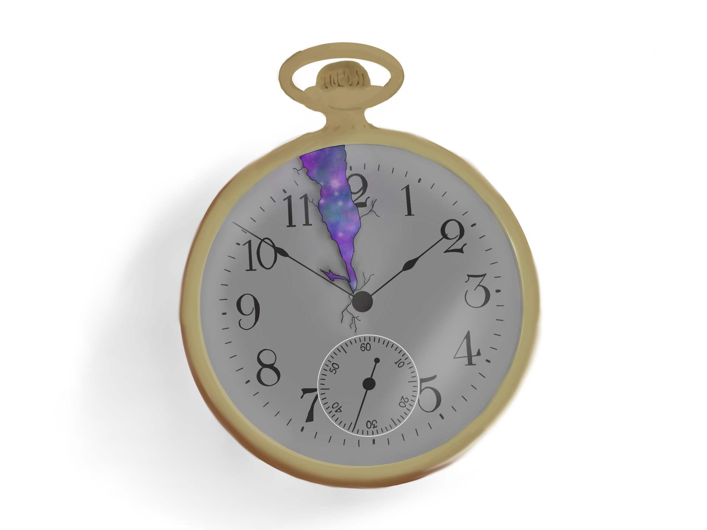

I feel as though I explain myself differently every time, for I am a changing being. A lost soul, someone who feels like a different breed, a black sheep. I had a near death that gave me many egos, sorting through them, figuring out who I am. Seeing myself as bizarre, perhaps, I am once in a lifetime. While being a musician, I have a gift of expression. Granted to channel my emotions into words that rhyme and become even relatable to those that hear it.
I can talk and impart powerful imagery in people's minds. Once or twice I have helped others see the light inside themselves, even though I was shrouded in darkness.
The real me longs to go far away from society. Explore and see the many people there is to see, welcome all that is beautiful, all that is passionate. The real me does not see rules as fixed, only man-made guidelines. The real me constantly longs for the ultimate freedom that is death. That is not sadness, for I know I have much to develop spiritually on my way towards freedom. And for now, I enjoy the music of life.
On the outside, I explain myself as an innovator. No other words come to mind but creative. I talk about changing things, pushing the system forward. I say that I want to be a programmer, data-scientist, and augmented reality developer. I feel the world calling on to me. Shiva is inside me everyday, calling out to destroy the ways of the old.
I evaluate myself critically and for a long time those evaluations were bitter. I have just now started to learn how to be easier on myself. I normally only see all of the work that I must do and never focus on all the work that I have done. That is changing, I see the light in me now. I just have to constantly remind myself.

I just tripped across a feeling, Too complex to define, too full of heart to ignore, It's as if, I opened up a little bit. My complex mathematical map of runes and broken clocks just got charted, It caught me off guard but it showed me the way, Toward something greater, a perspective of gleaming light. Every feeling might fade, somehow, i'm certain, I will feel this again when it gets dim just right, or when the chords sweep over the night , or I smell something, and it reminds me of rose petals but I cant quite create the sight. i'm certain that this frequency will resonate with my subconscious mind for a while, was such a feeling enough, to make life worth it, to feel heartache with smile.
Hey, I just thought this was a lovely night, Not many times I could see you here, Sometimes I wonder if you're just in my dreams, Would that make what's ours a whole different thing, Sometimes I get caught in my memories, it's so hard to sit so close but feel as if, You're so far away, I wanna reach out, Somebody help me. But I know that I’ve chosen this life, It all will flood back to me when I hear someone say, “Your life is about to change” The bridge between those words has collapsed, Looking back, I can still see those innocent eyes, Wondering why we even wanted this to happen, But this is nice, tonight. Shouldn’t have been thinking of that, But pardon me for wanting you to fix what I lack, I know you might be just as broken as I am, So that’s why I just gotta choose to stand. Take a step towards the next tragedy, Hopefully you’ll remember the life you and I had, I remember telling you that I wouldn't be able to, stand my life without you, But here I am… standing.